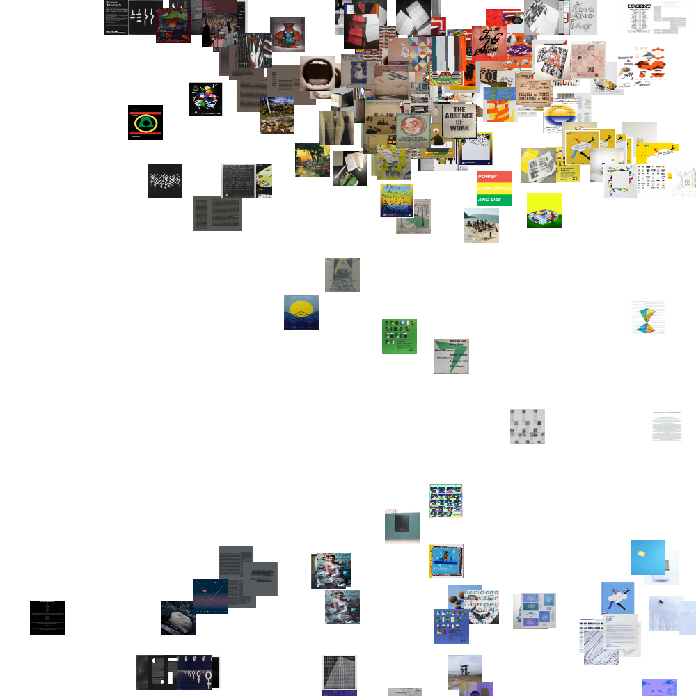

Workshop P8 : Exo 1 - Éléna Luzio/ Mina Leblanc/ Paul-Arthur Lemarquis
Wikidata
RawGraphs Examples
Astronaut Origin Circular Dendrogram

Astronaut Origin Circle Packing

Astronaut Origin Chords Diagram

Exo 2 - Éléna Luzio/ Mina Leblanc/ Paul-Arthur Lemarquis
Voici deux visualisations de données sur les localisations les plus mentionnées dans l’oeuvre le Tour du monde en quatre-vingts jours de Jules Vernes.
La première est une carte mettant en avant les localisations citées dans le livre.
Quantité de mentions
StreamGraph

La deuxième est une visualisation des trois villes les plus citées selon les segments du livre. En marron Hong Kong, en cyan Bombay et en bleu Londres. L’axe horizontal représente chaque segment.
Images

Radar Chart